Lumen — 15 вариантов логотипа
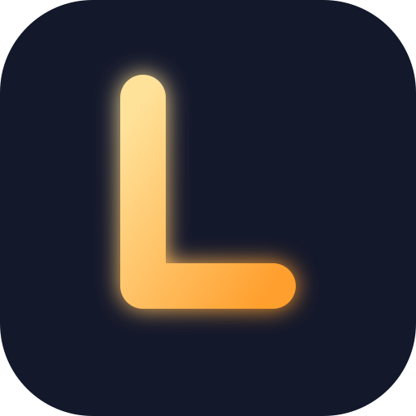
01. Светящаяся LБуква L из луча света на тёмном фоне — прямое прочтение «люмен».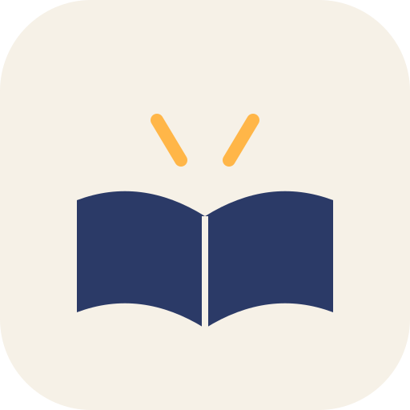
02. Книга с лучомРаскрытая книга, из корешка которой выходит свет — про чтение и обучение.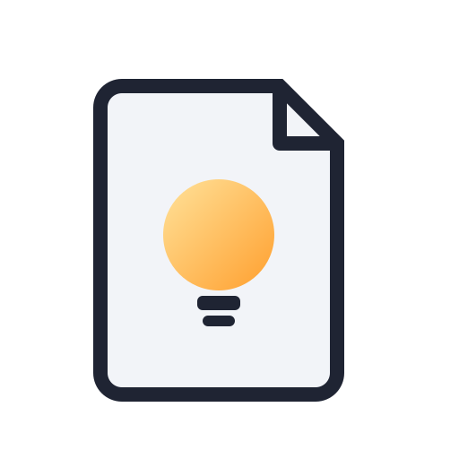
03. Страница-лампочкаЛист с загнутым углом, внутри — лампочка-идея. Заметки + озарение.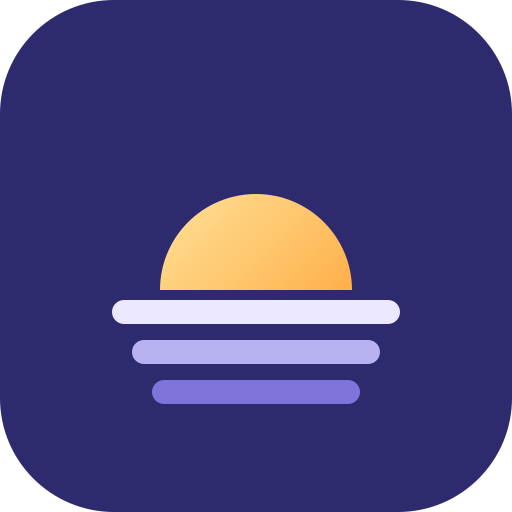
04. Рассвет над страницамиСолнце встаёт над стопкой листов — «каждый день чуть умнее».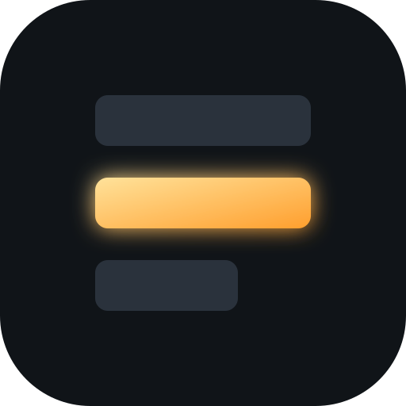
05. Светящийся блокСтопка блоков как в редакторе, один горит — блочные страницы.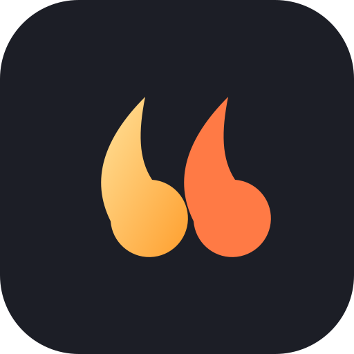
06. Цитата-пламяКавычка, превращающаяся в огонёк — выписки и цитаты из книг.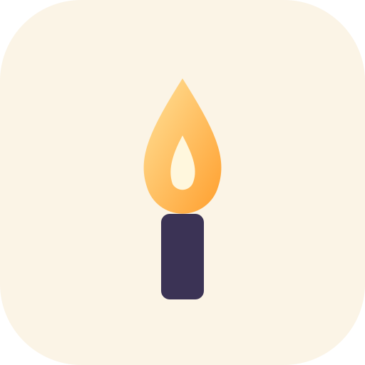
07. СвечаМинималистичный огонёк на кремовом фоне — тихое вечернее чтение.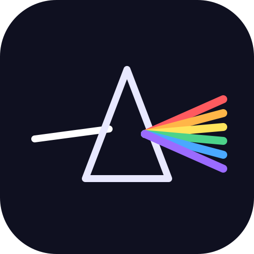
08. ПризмаБелый луч распадается на спектр — темы, виджеты, кастомизация.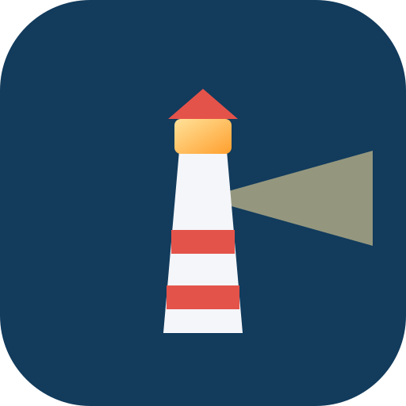
09. МаякМаяк, освещающий путь — ориентир в задачах и знаниях.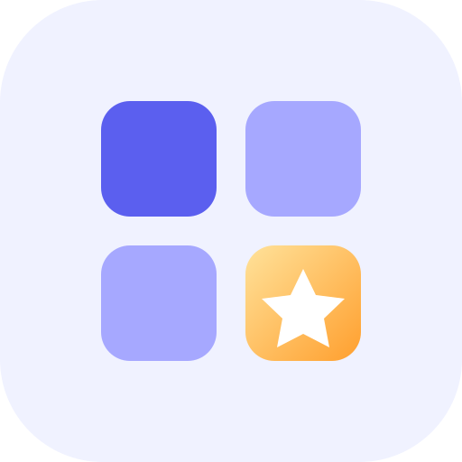
10. Звезда в сетке виджетовСетка 2×2, одна плитка — звезда. Намёк на магазин виджетов.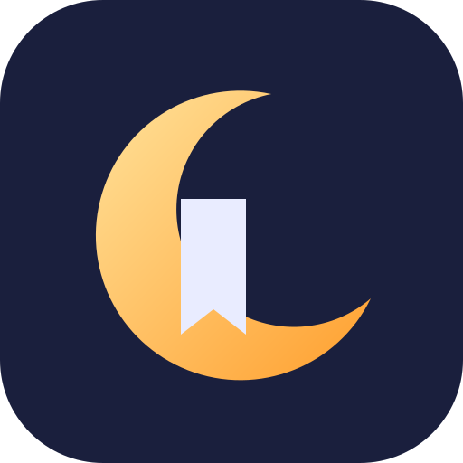
11. Луна и закладкаПолумесяц, ставший закладкой — читать в любое время, место не потеряется.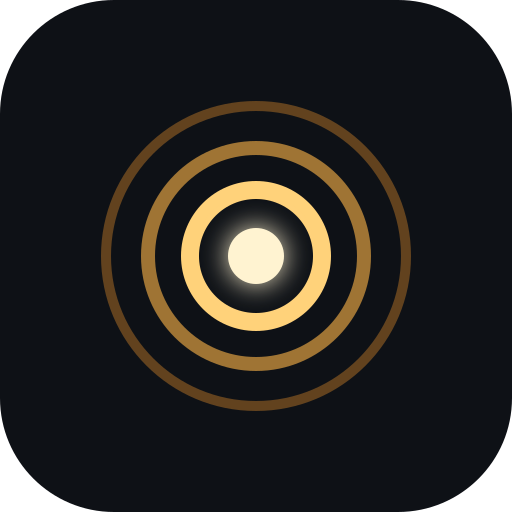
12. Кольца светаКонцентрические круги расходятся от точки — люмен как единица света.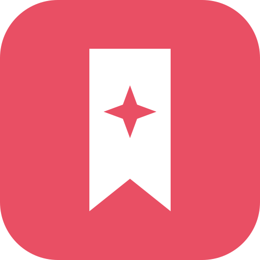
13. Лента-закладка с искройЗакладка с искрой на кончике — «отмеченное важное».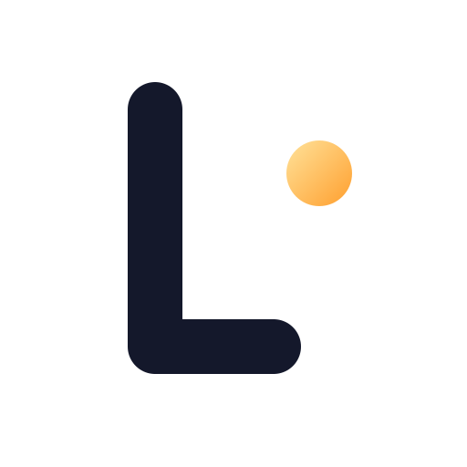
14. Монограмма L·Строгая монограмма L с точкой-искрой — для иконки и подписи.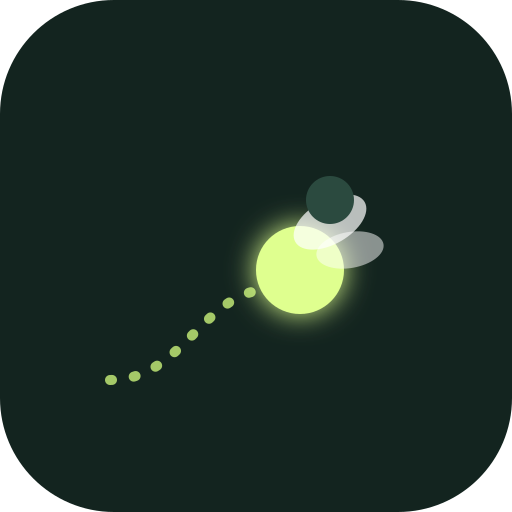
15. СветлячокСветлячок со светящимся хвостом-траекторией — живой, дружелюбный маскот.